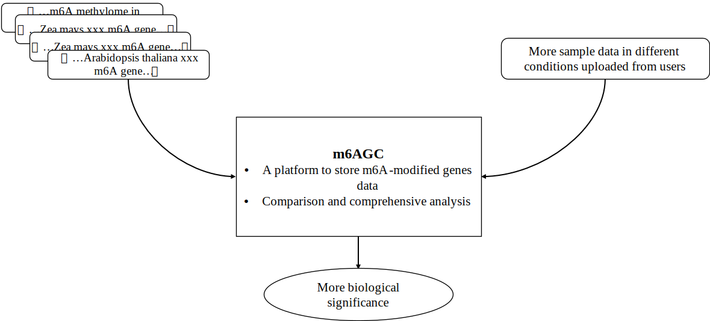

m6AGC: A plant m6A modified genes tool for comparison and analysis
M6A: N-6 methylation modification of RNA adenylate. It is the most common and critical internal modification of mRNA and lncRNAs in higher organisms. It regulates RNA stability, localization, transport, splicing and translation at the post-transcriptional level, enriching and regulating the genetic information of eukaryotes.
In the field of botany, the scope and function of M6A modification has been the focus of research. With the deepening of research, a large number of M6A modification related data have been produced. But these data are often only used in a single study, resulting in a large data waste.
The purpose of m6AGC is to build a platform to store m6A-modified gene data in different studies, and provide the comparison and comprehensive analysis of m6A-modified genes between data sets, so as to find out more biological significance.

At present, 36 groups of m6A-seq data form different strains,different tissues and different experimental conditions of 4 plant species have been collected as build-in data, containing __ m6A modified genes.
| Current version: v0.1 | |
| Species | 4 |
| Tissue | 12 |
| Strain | 11 |
| Sample/Dataset | 36 |
| m6A Genes | >40000 |
The core function of m6AGC is comparison.Click the "COMPARISON" button in the navigation bar to enter the comparison interface.
Select the information(species, phenotype, strain, tissue, treatment conditions) of the two samples that you are interested in, and click the "SUBMIT" button. You can also click the "upload" button when selecting one of the samples to upload your own sample data in a specified format and do a comparative analysis with the build-in data.
M6AGC will then give the basic information of the two samples and visualize the following five comparison results.
1. The m6A modified genes which are different between the two samples.
2. Methylation profile of m6A and identification of conserved sequence of m6A.
3. Analysis of differential expression of m6A genes between two samples.
4. GO Function, KEGG pathway enrichment analysis.
5. Analysis of protein interaction networks